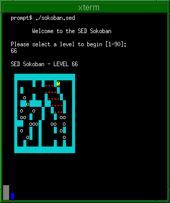

The classic Sokoban game reincarnated again, this time in sed. Yes, that sed! The good old UNIX Stream EDitor you used in the console days to s/substitute/words/g.
Note: It's cool because it's SED. Don't expect an amazing gameplay.

Gameplay video, by Yu-Jie Lin: